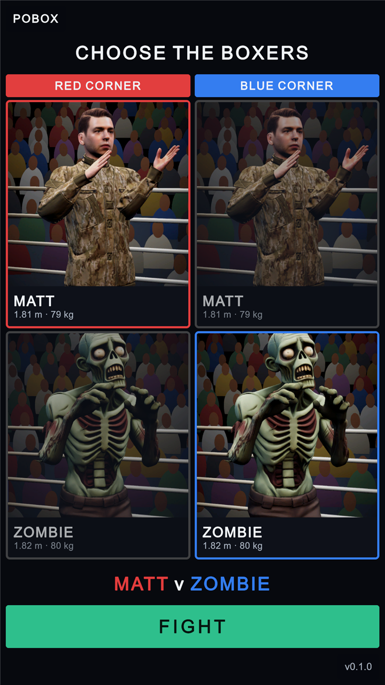
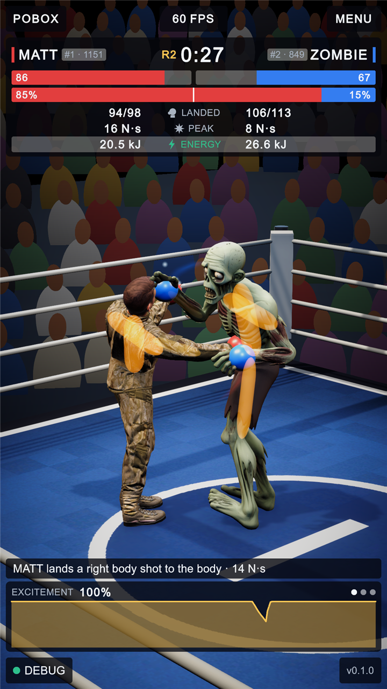
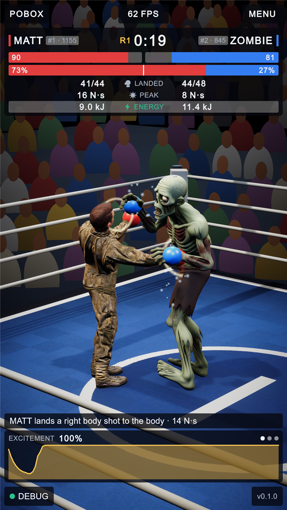
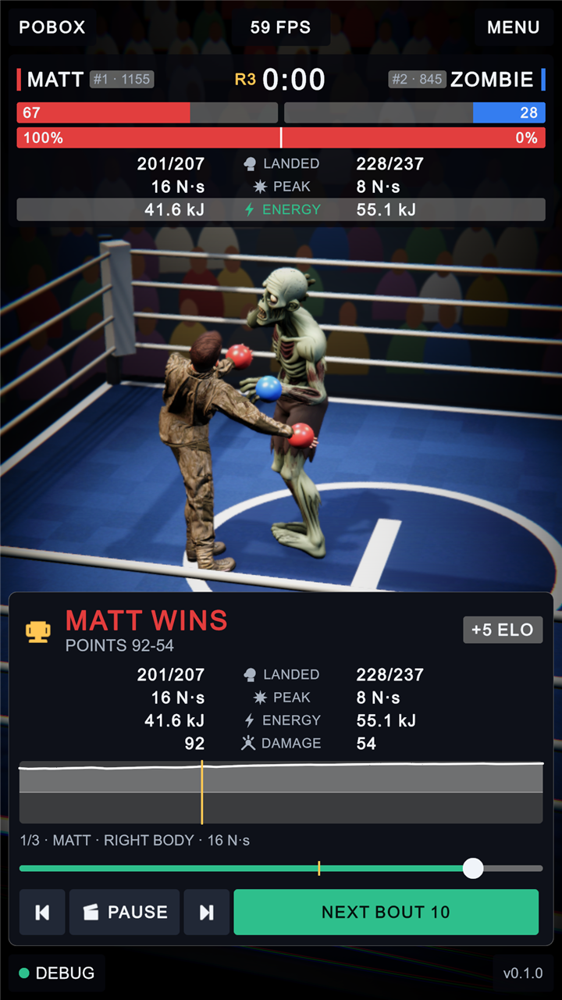
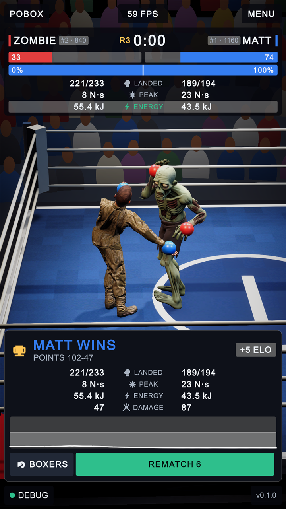
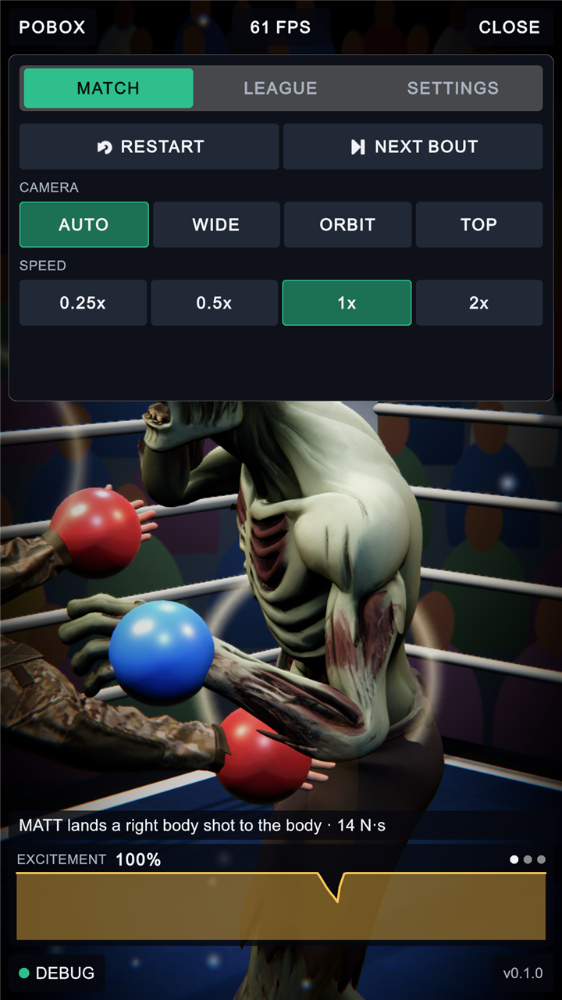
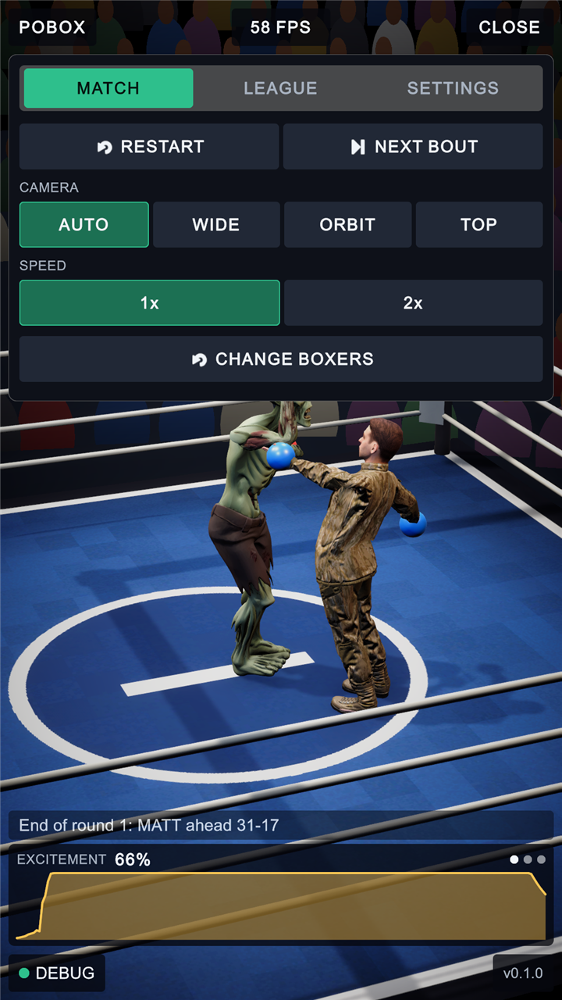
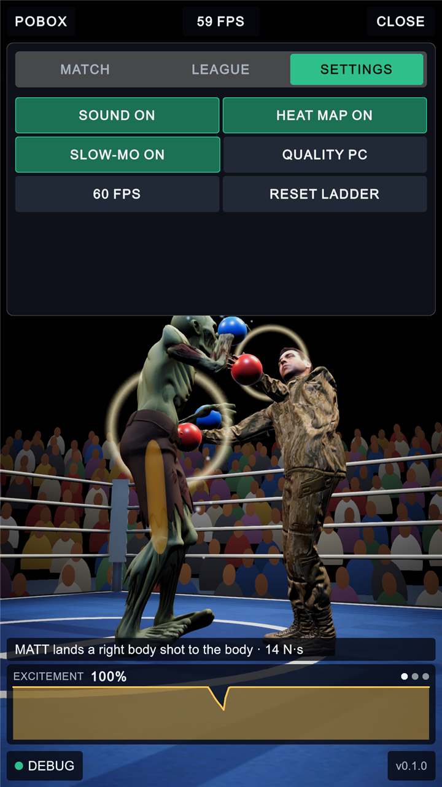
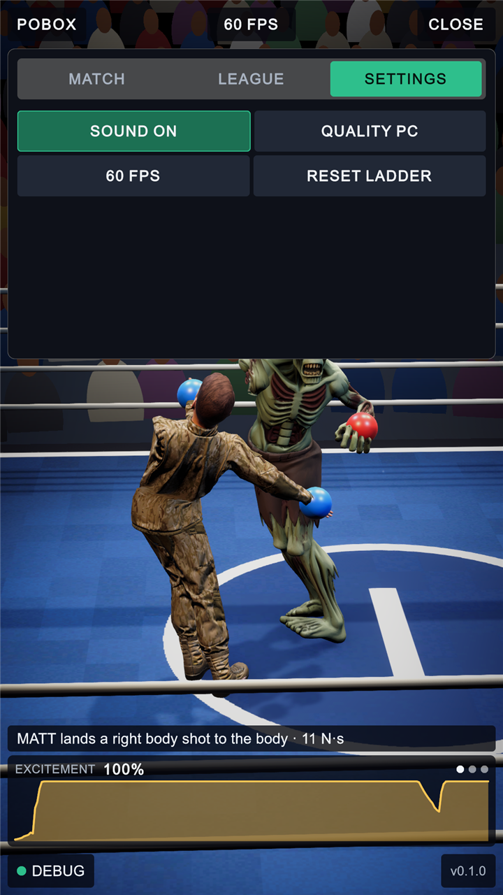

PoBox: choosing the boxers
1 October 2026 · the interface before and after, with what changed marked on the pictures
Three things were asked for: take slow motion and replays out of the game, take out the glow that lit a joint up when it was working hard, and add a first screen where the two boxers are chosen. Every "before" picture below was taken that afternoon, just before the change; every "after" picture just after it. Letters mark what went, numbers mark what is there now.
The new first screen

1 2 3 4 5 6- One column for each corner. Every trained boxer has a card in both.
- The boxer picked for a corner: full brightness, with a border in the corner's colour.
- A boxer not picked for that corner: dimmed. Tap it to pick it.
- Name, height and weight, read from the body the boxer was trained in. The picture is the boxer itself, photographed in the ring with its gloves off.
- The pairing as it stands, each name in its corner's colour.
- FIGHT loads the ring with those two.
The two corners always hold different boxers. Tapping the boxer who is already in the other corner swaps the two over, so with Matt and Zombie the choice is who is red and who is blue. The last pair fought is remembered for next time.
The fight: no glow on the joints

A B C- An amber shape glowing through Zombie's chest: the joint under it was near its torque limit.
- The same through its thigh.
- And through Matt's back and upper arm.

1 2- Nothing is drawn over the fighters but their gloves. The glow, the shapes that carried it and the shader code for it are gone.
- The scoreboard is unchanged. Joint stress is still measured and can still be read as a number here (tap this row) and in the commentary line; only the light is gone.
The result card: no replay

A B C D E F- The picture was a slow-motion highlight reel of the bout's three best hits, on a loop.
- A marker on the momentum graph for each of those hits.
- Which clip was playing, and what it was.
- A scrubber to drag through the clip by hand.
- Previous clip, pause, next clip.
- NEXT BOUT, counting down.

1 2 3 4- The picture is the ring as the bout ended. Nothing is replayed.
- The momentum graph of the bout, with no markers on it.
- BOXERS: back to the first screen to choose another pair.
- REMATCH: the same two again, counting down to doing it by itself. (It said NEXT BOUT; with the boxers chosen by hand, the next bout is a rematch.)
The card is 110 reference pixels shorter, so more of the ring shows above it. Between rounds, where a replay of the round's best hit used to play for up to nine seconds, there is now a three-second pause.
The menu, MATCH tab: no slow speeds, and a way back

A B C- 0.25x: the whole fight at quarter speed.
- 0.5x: half speed.
- The picture itself, caught mid slow motion: the close-up, the blurred crowd and the soft focus that came on after a heavy hit.

1 2- SPEED is normal or double. Nothing in the game runs slower than real time any more, by hand or by itself.
- CHANGE BOXERS: leaves the bout and goes back to the first screen.
The menu, SETTINGS tab: two switches fewer

A B- HEAT MAP: the joint glow, on or off.
- SLOW-MO: the slow motion after a heavy hit, on or off.

1- Four settings are left: sound, quality, frame rate, and resetting the ladder. There is nothing to switch off for features that no longer exist.
What was checked
| Check | Result |
|---|---|
| One-screen audit of the first screen at 720x1280, 1080x1920 and 1080x2400 | pass: nothing off the screen, nothing scrolls, no text under 26 px, nothing cut off |
| One-screen audit of the fight, the three menu tabs and the debug panel | pass at all three sizes |
| One-screen audit of the result card at 1080x1920 | pass |
| Play-mode tests | 8 of 8 pass (four are new: the first screen at three sizes, and the ring fielding the pair that was picked) |
| Matt red v Zombie blue, from the menu | fights, simulated in MuJoCo, both on their feet |
| Zombie red v Matt blue, from the menu | fights; a full three rounds ended MATT on points, 102 to 47 |
| Zombie v Zombie (tried, then not offered) | fought, with two knockdowns in 94 seconds |
| Matt v Matt (tried, then not offered) | no fight: 0 punches thrown by either in 92 seconds, and again when started 1.2 m apart |
Pictures: 720 px wide copies of 1080x1920 captures from the editor, taken with the project's own capture tool. The boxers' policies in these pictures are the snapshot of the match run imported at 14:07 on 1 October, not the finished run.